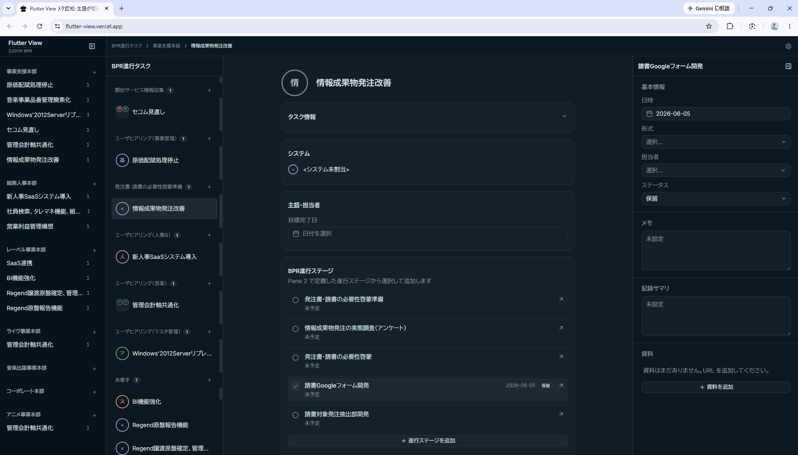
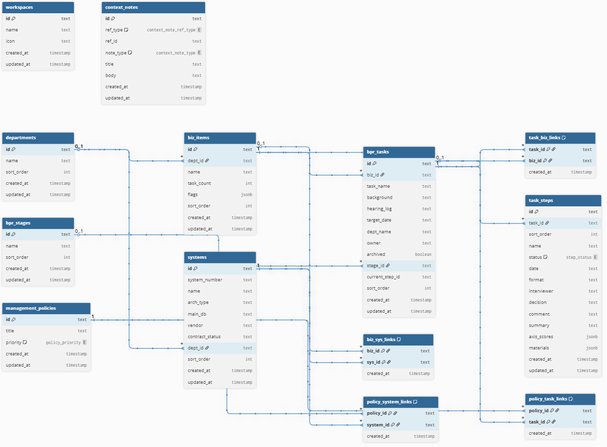
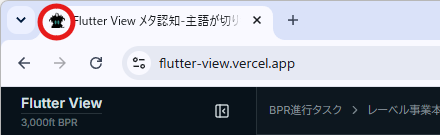

Flutter画面

全体アーキテクチャ図
JSONはリポジトリから直接読み込み、動的データはNeon DBに問い合わせる
テーブル関連図

残検討1 ─ task_steps カラムの項目加除
以下のカラムについてリネーム・削除を検討中（現テーブル定義との差分）
| 現状 | 整理後 | 備考 |
|---|---|---|
| id | id | そのまま |
| task_id | task_id | そのまま |
| sort_order | sort_order | そのまま |
| name | name | ステップ名 |
| status | status | step_status enum |
| date | due_date | リネーム推奨 |
| interviewer | assignee | リネーム |
| comment | memo | リネームでも可、そのままでも |
| summary | ✕ 削除 | memoと重複なので削除 |
残検討2 ─ Google ドライブ URL の保存方式
drive_links jsonb カラムを追加し、Google ドライブ URL を配列で持つ形を検討中。
// schema.ts イメージ export const taskSteps = pgTable('task_steps', { id: text('id').primaryKey(), taskId: text('task_id').references(() => bprTasks.id), sortOrder: integer('sort_order'), name: text('name'), status: stepStatusEnum('status'), dueDate: text('due_date'), assignee: text('assignee'), memo: text('memo'), driveLinks: jsonb('drive_links'), // ["https://drive.google.com/..."] createdAt: timestamp('created_at'), updatedAt: timestamp('updated_at'), })
テーブル設計詳細
ENUM 定義
step_status
pending / planned / done
context_note_ref_type
task / system
context_note_type
法令リスク / 内部統制
業界慣行 / ブラックリスト
業界慣行 / ブラックリスト
policy_priority
critical / high
| テーブル | 主なカラム | 備考 |
|---|---|---|
| workspaces | id, name, icon, created_at, updated_at | |
| departments | id, name, sort_order, created_at, updated_at | |
| biz_items | id, dept_id, name, task_count, flags jsonb, sort_order, … | dept_id → departments FK |
| systems | id, system_number, name, arch_type, main_db, vendor, contract_status, dept_id, sort_order, … | |
| bpr_stages | id, name, sort_order, created_at, updated_at | |
| bpr_tasks | id, biz_id, task_name, background, hearing_log, target_date, dept_name, owner, archived, stage_id, current_step_id, sort_order, … | stage_id → bpr_stages FK current_step_id → task_steps FK |
| task_steps | id, task_id, sort_order, name, status step_status, date, format, interviewer, decision, comment, summary, axis_scores jsonb, materials jsonb, … | task_id → bpr_tasks FK |
| task_biz_links | task_id, biz_id, created_at | PK: (task_id, biz_id) |
| biz_sys_links | biz_id, sys_id, created_at | PK: (biz_id, sys_id) |
| management_policies | id, title, priority policy_priority, created_at, updated_at | |
| policy_task_links | policy_id, task_id, created_at | PK: (policy_id, task_id) |
| policy_system_links | policy_id, system_id, created_at | PK: (policy_id, system_id) |
| context_notes | id, ref_type context_note_ref_type, ref_id, note_type context_note_type, title, body, … | ref_type = task | system note_type Enum で4種管理 |
工夫した点・苦労した点
📐 dbdiagram.io でリレーションを図式化
テーブル数が多くなりリレーション（第7回講義「紐づけ」）も複雑化したため、dbdiagram.io を活用して図式化した。視覚的にFKの繋がりを確認しながら設計を進められ、抜け漏れの発見にも役立った。
🗄️ NeonDB上で直接値を変更して確認する方が効率的
NeonDB開通後はDB上で値を少し変更して画面の見え方を確認する方が調整しやすかった。テーブルに手を入れるたびSEED経由でのJSONデータの流し込みがやりにくく、SEED停止も検討しているが、テーブルに残事項が残っているため現時点では保留。
🚀 公開前にクレジットが枯渇 → Copilotと手動で乗り切った
公開直前にAIクレジットが枯渇してしまい、Copilotに助けてもらいながらほぼ手動でデプロイを完遂。予期せぬ状況でも最終的に公開にこぎつけることができた。
ファビコン

ファビコン
favi.png
favi.png
アプリアイコン
flatt.png
flatt.png
当該アプリのファビコンはオリジナル画像を作成して設定した。ブラウザタブやブックマークに表示されるアイコンをアプリ独自のデザインにすることで、プロダクトとしての完成度を高めた。